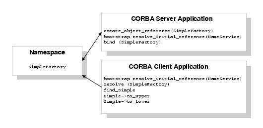

The Oracle Tuxedo CORBA Java client and Oracle Tuxedo CORBA Java client ORB were deprecated in Tuxedo 8.1 and are no longer supported. All Oracle Tuxedo CORBA Java client and Oracle Tuxedo CORBA Java client ORB text references, associated code samples, should only be used to help implement/run third party Java ORB libraries, and for programmer reference only.
Note:
Technical support for third party CORBA Java ORBs should be provided by their respective vendors. Oracle Tuxedo does not provide any technical support or documentation for third party CORBA Java ORBs.
How the Name Service Sample Application Works
The CORBA Name Service sample application is a modification of the Simpapp sample application. This sample application provides a CORBA C++ client and server. The Name Service sample application uses a namespace to store the SimpleFactory object. The server application creates the SimpleFactory object and binds the object to the namespace. The client application connects to the namespace, resolves the name of the SimpleFactory object, and then invokes methods on the SimpleFactory. Figure 4-1 illustrates how the Name Service sample application works.
Figure 4-1 The Name Service Sample Application

The Name Service sample application implements the CORBA interfaces listed in Table 4-1:
Table 4-1 CORBA Interfaces for the Name Service Sample Application
Interface
Description
Operation
SimpleFactory
Creates object references to the Simple object
find_simple()
Simple
Converts the case of a string
to_upper()
to_lower()
Listing 4-1 shows the simple.idl file that defines the CORBA interfaces in the Name Service sample application.
Listing 4-1 OMG IDL Code for the Name Service Sample Application
#pragma prefix "beasys.com" interface Simple { //Convert a string to lower case (return a new string) string to_lower(in string val); //Convert a string to upper case (in place) void to_upper(inout string val); }; interface SimpleFactory { Simple find_simple(); };
Building and Running the Name Service Sample Application
To build and run the Name Service sample application, complete the following steps:
Copy the files for the Name Service sample application into a work directory.
Change the permissions on the files in the work directory.
Verify the locations defined in environment variables.
Execute the runme command.
Step 1: Copy the Files for the Name Service Sample Application into a Work Directory
Copy the files for the Name Service sample application into a work directory on your local machine. Running the sample application in a work directory allows you to identify the files that are created when the sample is executed. The following sections detail the directory location and sources files for the the Name Service sample application.
CORBA C++ Client and Server Version of the Name Service Sample Application
The files for the Name Service sample application are located in the following directories:
Windows
drive:\tuxdir\samples\corba\cnssimpapp
UNIX
/usr/local/tuxdir/samples/corba/cnssimpapp
Use the files listed in Table 4-2 to build and run the Name Service sample application.
Table 4-2 Files Included in the Name Service Sample Application
File
Description
simple.idl
The OMG IDL code that declares the Simple and SimpleFactory interfaces.
simples.cpp
The C++ source code for the CORBA server application in the Name Service sample application.
simplec.cpp
The C++ source code for the CORBA client application in the Name Service sample application.
simple_i.cpp
The C++ source code that implements the Simple and SimpleFactory methods.
simple_i.h
The C++ header file that defines the implementation of the Simple and SimpleFactory methods.
Readme.txt
Provides information about building and running the C++ client and server of the Name Service sample application.
runme.cmd
The Windows command file that builds and runs the Name Service sample application.
runme.ksh
The UNIX Korn shell script that builds and executes the Name Service sample application.
makefile.mk
The makefile for the Name Service sample application on UNIX operating systems. This file is used to build the Name Service sample application manually. See the Readme.txt file for additional information. The location of the executable UNIX make command must be defined in the PATH environment variable.
makefile.nt
The makefile for the Name Service sample application on the Windows operating system. This makefile can be used directly by the Visual C++ nmake command. This file is used to manually build the Name Service sample application. See the Readme.txt file for more information. The location of the executable Windows nmake command must be defined in the PATH environment variable.
Step 2: Change the Protection Attribute on the Files for the Name Service Sample Application
The files for the sample application are installed with a permission level of read only. Before you can edit or build the files in the Name Service sample application, you must change the protection attribute of the files you copied into your work directory, as follows:
Windows
prompt> attrib -rdrive:\workdirectory\*.*
UNIX
prompt> /bin/ksh
ksh prompt> chmod u+w /workdirectory/*.*
On UNIX platforms, you also need to change the permission of runme.ksh to allow execute permission, as follows:
ksh prompt> chmod +x runme.ksh
Step 3: Verify the Settings of the Environment Variables
Before running the Name Service sample application, you need to verify that certain environment variables are defined to correct locations. In most cases, these environment variables are set as part of the installation procedure. Some environment variables are set when you execute the runme command. You need to check the environment variables to ensure they reflect correct information.
Table 4-3 lists the environment variables required to run the Name Service sample application.
Table 4-3 Required Environment Variables for the Name Service Sample Application
Environment Variable
Description
APPDIR
Execution of the runme command sets this environment variable to the absolute path name of the current directory. Execute the runme command from the directory to which you copied the sample application files. For example:
Windows
APPDIR=C:\workdirectory\cnssimpapp
UNIX
APPDIR=/usr/workdirectory/cnssimpapp
RESULTSDIR
Execution of the runme command sets this environment variable to the results directory, subordinate to the location defined by the APPDIR environment variable.
Windows
RESULTSDIR=%APPDIR%\results
UNIX
RESULTSDIR=$APPDIR\results
TUXCONFIG
Execution of the runme command sets this environment variable to the directory path and filename of the configuration file.
Windows
TUXCONFIG=%RESULTSDIR%\tuxconfig
UNIX
TUXCONFIG=$RESULTSDIR/tuxconfig
To verify that the information for the environment variables defined during installation is correct, complete the following steps:
Windows
From the Start menu, select Settings.
From the Settings menu, select the Control Panel.
The Control Panel appears.
Click the System icon.
The System Properties window appears.
Click the Environment tab.
The Environment page appears.
Check the settings of the environment variables.
UNIX
ksh prompt> printenv TUXDIR
To change the settings, complete the following steps:
Windows
On the Environment page in the System Properties window, click the environment variable you want to change or enter the name of the environment variable in the Variable field.
Enter the correct information for the environment variable in the Value field.
Click OK to save the changes.
UNIX
ksh prompt> export TUXDIR=directorypath
Step 4: Execute the runme Command
The runme command completes the following steps end-to-end:
Sets the system environment variables.
Loads the UBBCONFIG file.
Compiles the code for the client application.
Compiles the code for the server application.
Starts the server application using the tmboot command.
Starts the client application.
Stops the server application using the tmshutdown command.
Note:
You can also run the Name Service sample application manually. The steps for manually running the Name Service sample application are described in the Readme.txt file.
To build and run the Name Service sample application, enter the runme command, as follows:
Windows
prompt> cd workdirectory
prompt> runme
UNIX
ksh prompt> cd workdirectory
ksh prompt> ./runme.ksh
When the Name Service sample application runs successfully from start to finish, this series of messages is printed:
Testing NameService simpapp cleaned up prepared built loaded ubb booted ran shutdown saved results PASSED
Table 4-4 lists the files in the work directory generated by the runme command.
Table 4-4 C++ Files Generated by the runme Command
File
Description
simple_c.cpp
Generated by the idl command, this file contains the client stubs for the SimpleFactory and Simple interfaces.
simple_c.h
Generated by the idl command, this file contains the client definitions of the SimpleFactory and Simple interfaces.
simple_s.cpp
Generated by the idl command, this file contains the server skeletons for the SimpleFactory and Simple interfaces.
simple_s.h
Generated by the idl command, this file contains the server definition for the SimpleFactory and Simple interfaces.
.adm/.keybd
A file that contains the security encryption key database. The subdirectory is created by the tmloadcf command in the runme command.
results
A directory created by the runme command, subordinate to the location defined by the APPDIR environment variable.
Table 4-5 lists files in the results directory generated by the runme command.
Table 4-5 Files in the results Directory Generated by the runme Command
File
Description
input
Contains the input that the runme command provides to the Java client application.
output
Contains the output produced when the runme command executes the Java client application.
expected_output
Contains the output that is expected when the Java client application is executed by the runme command. The data in the output file is compared to the data in the expected_output file to determine whether or not the test passed or failed.
log
Contains the output generated by the runme command. If the runme command fails, check this file for errors.
setenv.cmd
Contains the commands to set the environment variables needed to build and run the Java Name Service sample application on the Windows operating system platform.
setenv.ksh
Contains the commands to set the environment variables needed to build and run the Java Name Service sample application on UNIX operating system platforms.
stderr
Output from commands generated by the tmboot command, which is executed by the runme command. If the -noredirect JavaServer option is specified in the UBBCONFIG file, the System.err.println method sends the output to the stderr file instead of to the ULOG file.
stdout
Output generated by the tmboot command, which is executed by the runme command. If the -noredirect JavaServer option is specified in the UBBCONFIG file, the System.out.println method sends the output to the stdout file instead of to the ULOG file.
tmsysevt.dat
Contains filtering and notification rules used by the TMSYSEVT (system event reporting) process. This file is generated by the tmboot command in the runme command.
tuxconfig
A binary version of the UBBCONFIG file.
ubb
The UBBCONFIG file for the Java Name Service sample application.
ULOG.date
A log file that contains messages generated by the tmboot command.